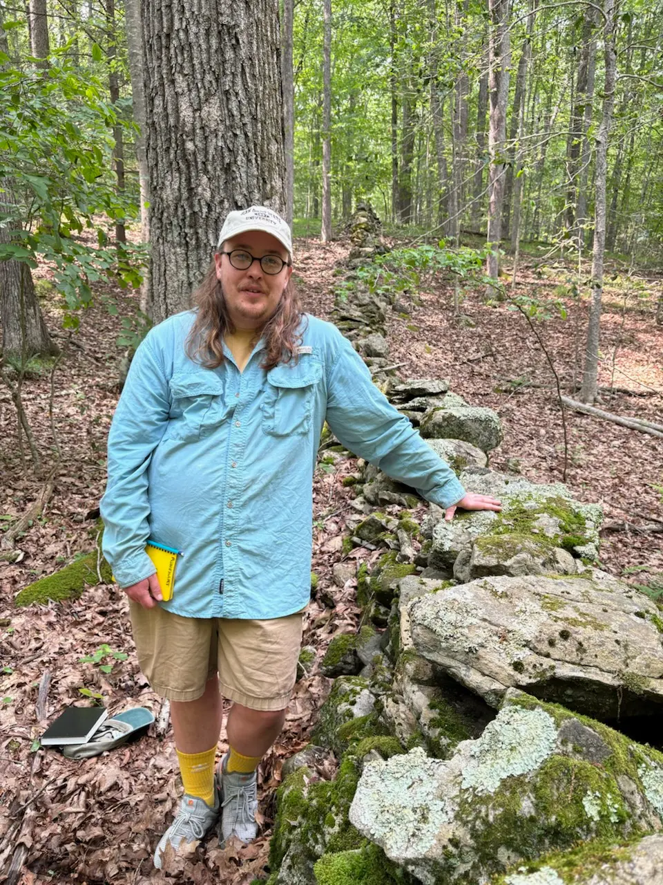
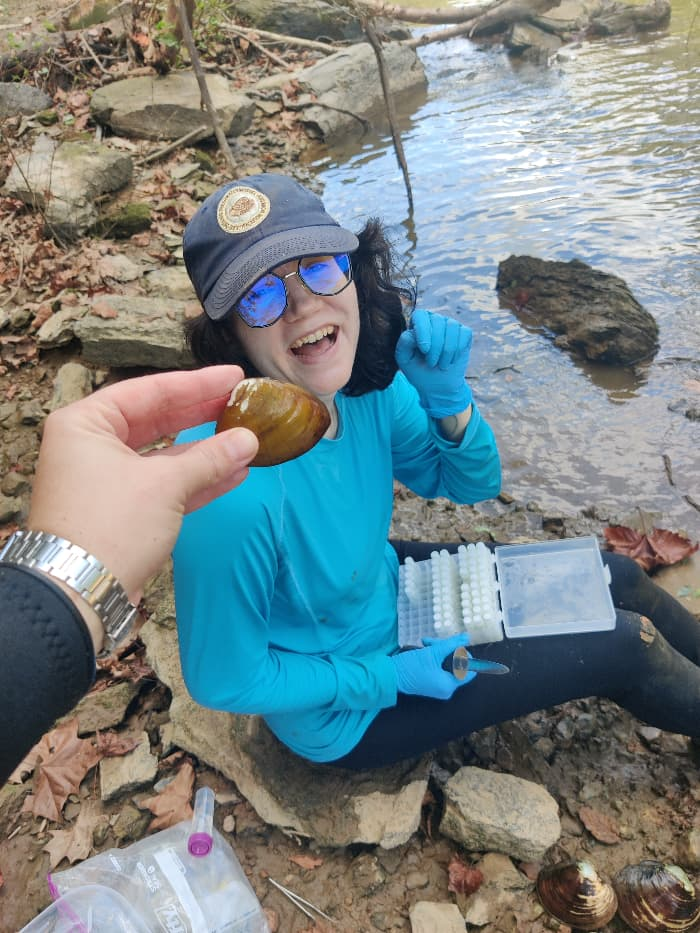
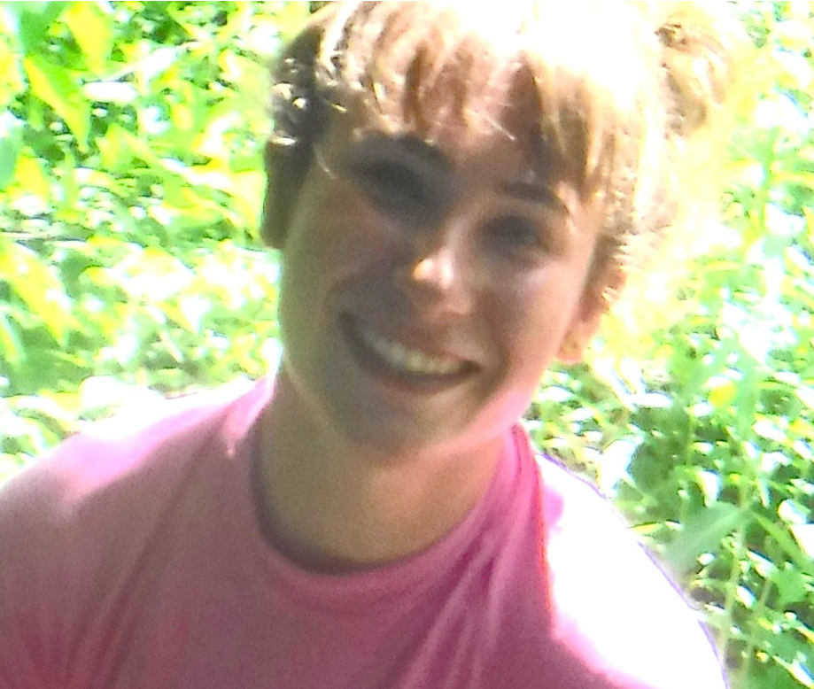
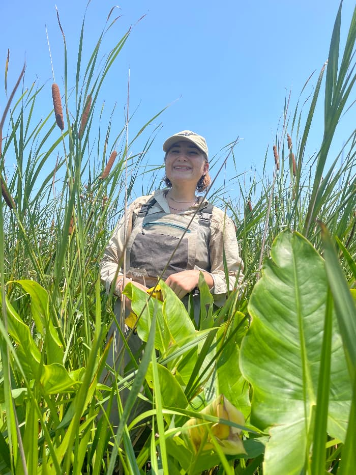

Our consortium brings together experts in community ecology, malacology, and genomics from across the Atlantic Slope.

Assistant Professor, Coastal Institute Senior Fellow - University of Rhode Island
Co-restoring freshwater mussels and submerged aquatic vegetation to improve water quality, wildlife habitat, and equitable assess to green space.

Postdoctoral Fellow - University of Rhode Island
Integrating genomics, biogeochemistry, and community ecology for Nature-based solutions.

MS Student - University of Rhode Island
AI models for Nature-Based Solutions and freshwater mussel conservation

Graduate Student - Drexel Academy of Natural Sciences
A future conservation leader, submerged aquatic vegetation nerd.